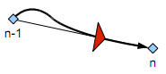

This command has been designed to accommodate automatic landing of your UAV.
Flies along the line from the previous waypoint to this target waypoint. Basically it is identical to FROM_TO, except:
You can define the throttle when flying towards this waypoint
When this waypoint is reached, it will not move on to the next command but instead continue to fly along the same line

The
target waypoint can be absolute latitude and longitude coordinates,
or relative (North and East) of the home position.
Parameters:
Latitude of target waypoint
Longitude of target waypoint
Target altitude
Throttle%: Use 0 to cut throttle when flying towards this point